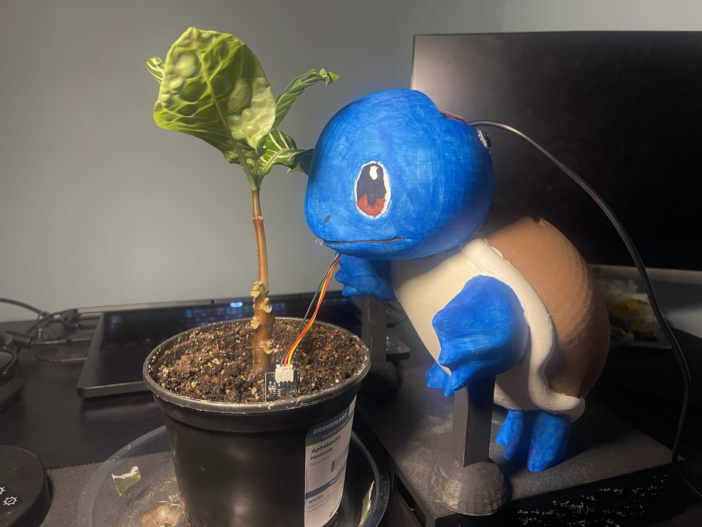
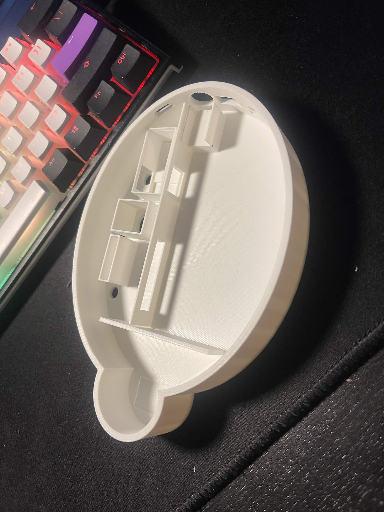
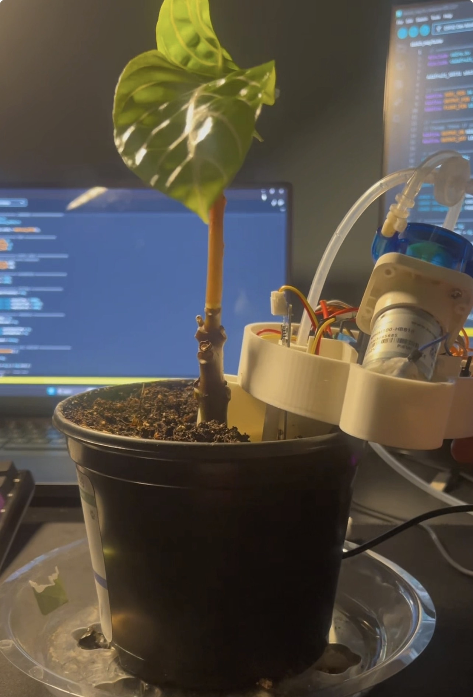
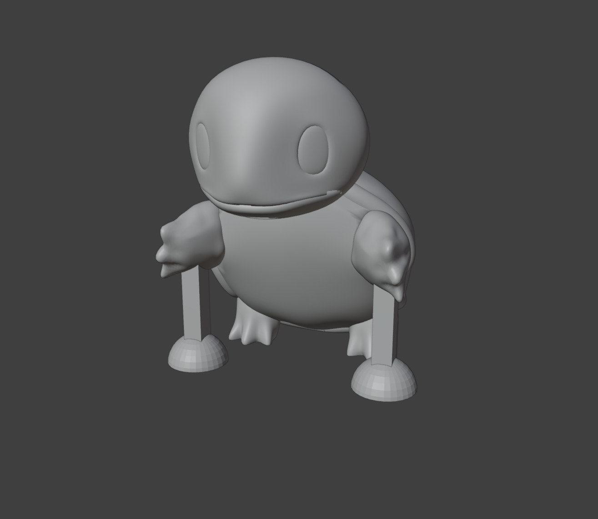
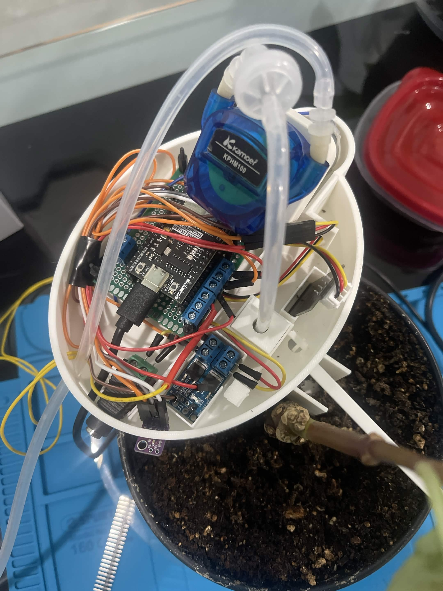
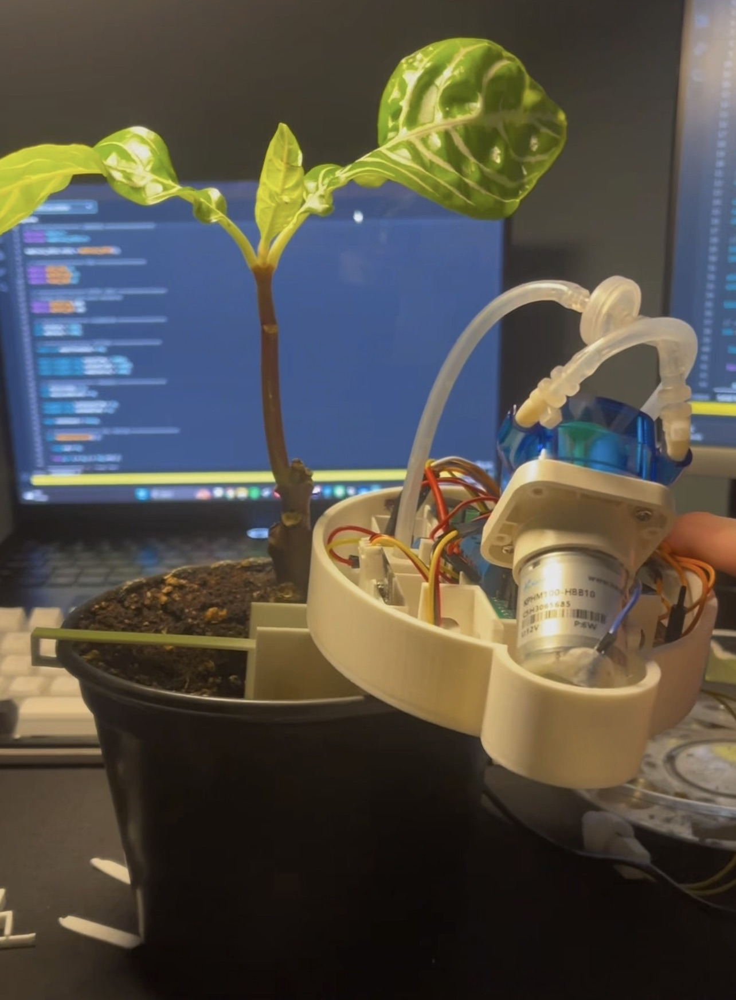

ESP32 Automated Plant Watering System
24°C
55%
OK
7:43 PM
OFF
Ready

The Squirtle Smart Garden is an automated watering system built around an ESP32 microcontroller. The goal was to design a system that monitors environmental data and waters the plant automatically when the soil gets dry.
The system tracks temperature, humidity, and the reservoir water level, using a MOSFET module to safely switch a low-voltage water pump on and off based on sensor inputs.
This project allowed me to integrate multiple engineering disciplines, combining 3D printing, circuit assembly, soldering, embedded programming, and web development into one working prototype.
How the project evolved from the initial creative concept into the final functional design.

The project originally started as a ladybug-themed smart garden. While a fun creative concept, planning the physical build revealed severe internal space limitations. There simply wasn't enough vertical room inside the flat shell layout to house the microcontroller, wiring matrix, and internal plumbing without requiring an awkward, messy external reservoir tank.

Pivoting to a character-based design, I 3D printed an initial physical chassis. However, hands-on testing exposed a major mechanical flaw: putting the heavy peristaltic pump and electronics out on the edge shifted the center of mass completely off-balance, causing the unit to tip forward off the pot. I had to print a temporary stabilizing hook to keep it steady during electrical testing.

Taking lessons directly from the flawed physical prototype, I engineered the final digital CAD model. I completely reconfigured the internal dimensions, balanced the hardware weight distribution directly over the mount point, and integrated custom routing channels. This optimized layout entirely eliminated the tipping issue, resulting in a perfectly stable, standalone smart garden system.
The ESP32 serves as the central controller for managing the sensor data, pump logic, and web communication.
• Environmental Monitoring: A dedicated sensor constantly reads the surrounding ambient temperature and humidity levels.
• Reservoir Safety: A float switch checks the water level to ensure the pump never runs dry, protecting the hardware from burning out.
• Control Logic: The ESP32 processes the sensor inputs and uses a MOSFET switching module to safely actuate the water pump when triggered.
• Web Dashboard: The ESP32 hosts a lightweight local web server, letting me monitor the real-time status of the project live through any browser.

Figure 1.0: Internal circuit matrix and component layout optimized within the final chassis shell.Real-world mechanical and fluid challenges encountered during initial system testing.

⚠️ Temporary Fix (With Hook)Testing the physical prototype on an actual plant pot brought forward critical design milestones that required hands-on troubleshooting:
• Weight Distribution Management: Real-world testing confirmed that mounting components away from the central core destabilized the alignment. The integration of a temporary balancing hook allowed active circuit testing to continue safely while the true, balanced weight boundaries were being calculated for the final CAD revisions.
• Funnel Geometry Evaluation: In an earlier iteration, a V-shaped funnel assembly was evaluated at the base to direct water flow. Flow analysis revealed that this structural shape created restrictions and a high clogging risk. This direction was abandoned in favor of the direct-drop alignment optimized inside the final Squirtle layout, ensuring fluid safely hits the center root zone.
ESP32 Dev Module (Dual-core MCU with built-in Wi-Fi and Bluetooth)
SHT31-D Ambient Temp/Humidity Module, Capacitive Soil Moisture Sensor, and a Vertical Float Switch
12V Kamoer Peristaltic Pump, Flexible Silicone Tubing, and a Dual-MOSFET Trigger Module
3D Printed Custom Squirtle Body & Shell Enclosure (with Double-Sided Prototype PCB Layouts)
12V 5A External DC Power Transformer with 5.5mm Barrel Jacks and Shared Common Ground
HTML, CSS, JavaScript, and GitHub Pages (communicating with the local ESP32 Web Server)
✅ Automated pump control based on environmental data
✅ Real-time temperature monitoring
✅ Real-time humidity monitoring
✅ Low-water level safety shutoff protection
✅ Pump cooldown timer to prevent over-watering
✅ Responsive web dashboard for remote tracking
3D Modeling (Blender)
3D Printing & Print Optimization
Hardware Assembly & Soldering
C++ Embedded Programming (ESP32)
Sensor Integration & Calibration
Front-End Web Development (HTML/CSS)
Version Control (Git & GitHub Pages)
For the next version of the project, I plan to develop a companion mobile app and design specific internal routing channels within the 3D-printed chassis to cleanly hide all the wiring. I also want to upgrade to a more powerful pump and integrate a liquid nutrient tracking system. Finally, I will be adjusting my 3D printer settings to ensure a completely leak-proof reservoir right off the print bed, removing the need for secondary hot glue or superglue sealants.